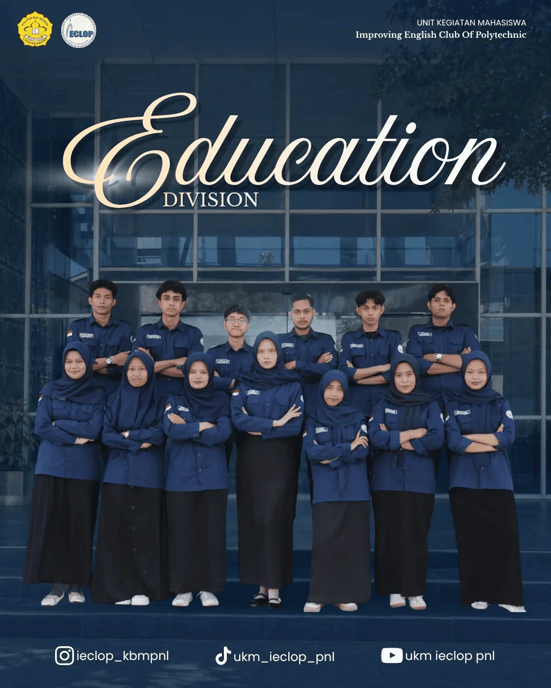
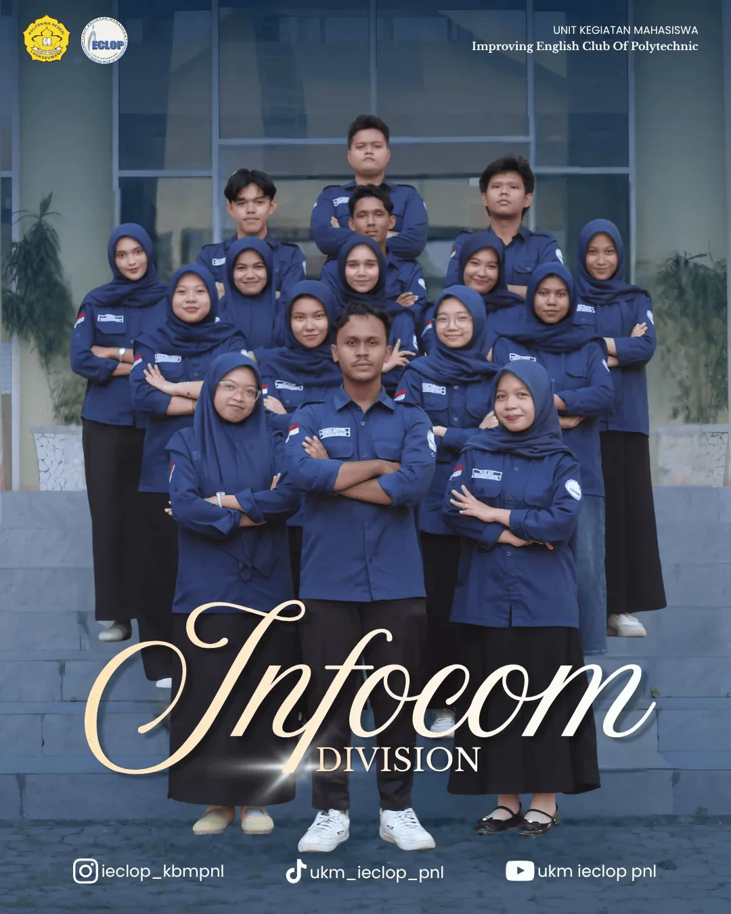
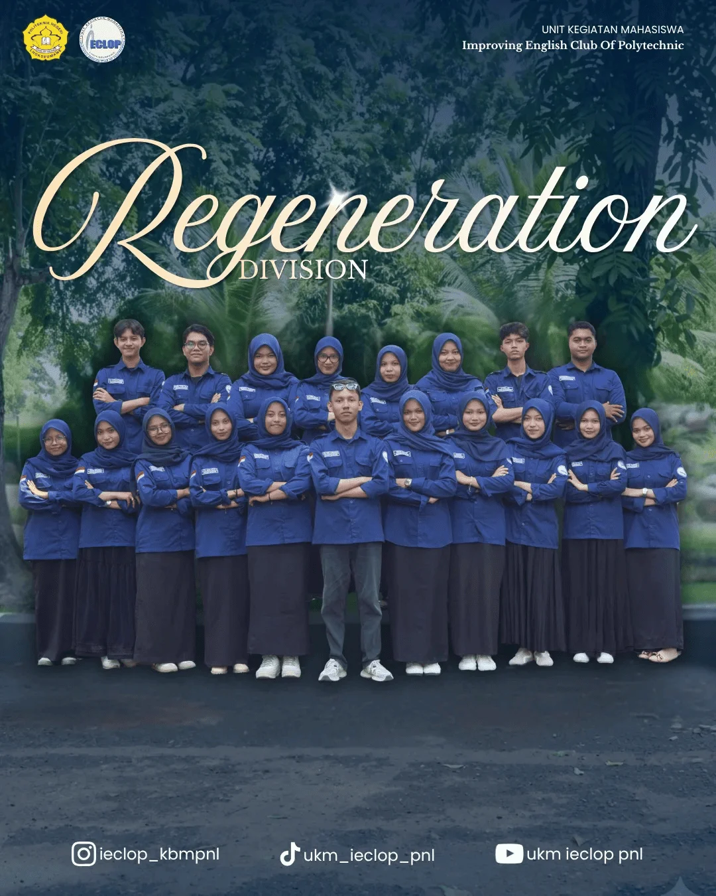
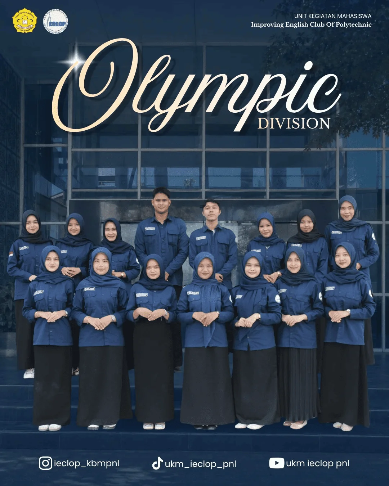
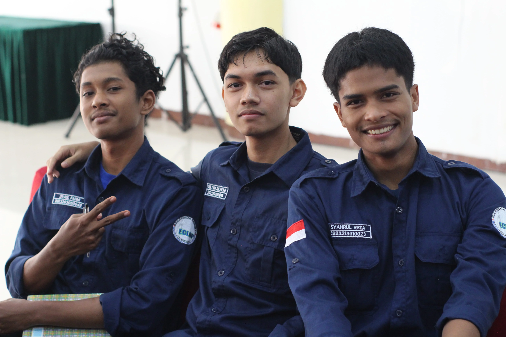
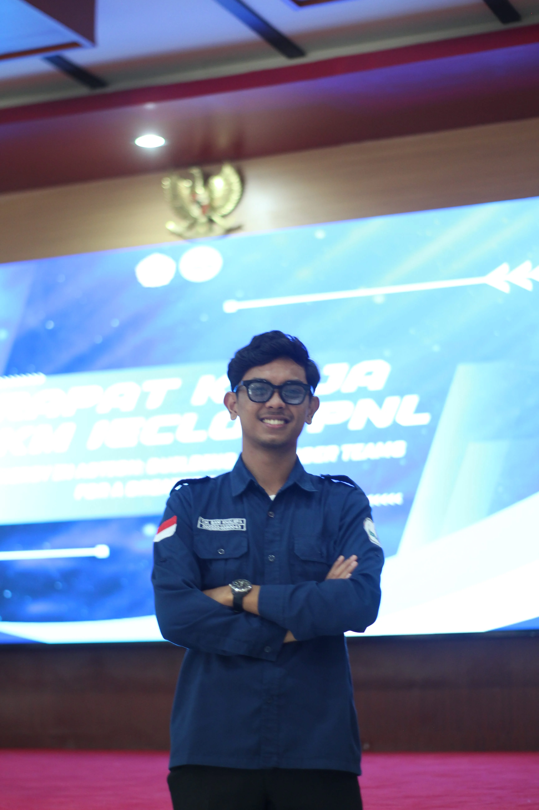
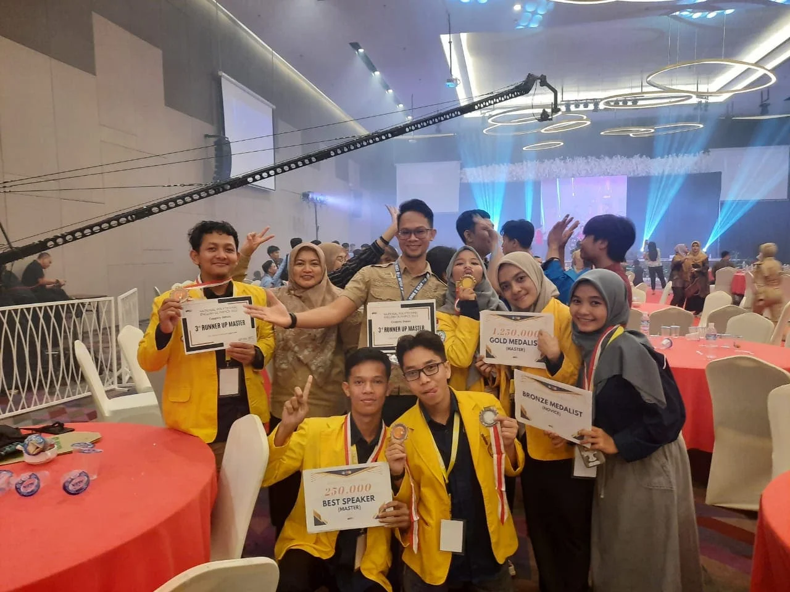

GALERI DIVISI & PROKER
Pilih divisi di bawah ini untuk melihat album dokumentasi program kerja lengkap.

5 Program Kerja
Divisi Education
Dokumentasi Kelas TOEFL, Belajar Bulanan, Kelas Spesial & Artikel.

12 Program Kerja
Divisi Infocom
Dokumentasi Website, Social Media, Podcast, Mading & Desain.

8 Program Kerja
Divisi Regeneration
Dokumentasi Open Recruitment, HOCO, Internship & Gathering.

5 Program Kerja
Divisi Olympic
Dokumentasi Komunitas Olimpiade, Latihan & Prestasi IECLOP.

8 Program Kerja
Divisi Public Relation
Dokumentasi I-Care, Charity, Iftar, Pengabdian & Kemitraan.

Dokumentasi Kegiatan
Kegiatan UKM IECLOP
Kumpulan dokumentasi kegiatan seluruh keluarga besar UKM IECLOP.

Dokumentasi Momen
Momen & Kenangan
Kumpulan dokumentasi momen berharga, keseruan, dan kebersamaan IECLOP.

Dokumentasi Lomba
Kompetisi & Lomba
Dokumentasi partisipasi dan kejuaraan IECLOP di berbagai ajang kompetisi.